До революции 1917 года в России существовало множество журналов для женщин. Однако после прихода к власти большевиков ситуация кардинально изменилась. Советская власть создала новую систему женской прессы, которая работала на идеологию государства.
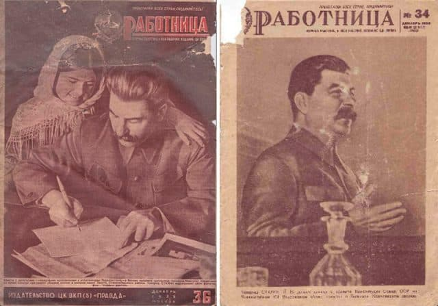
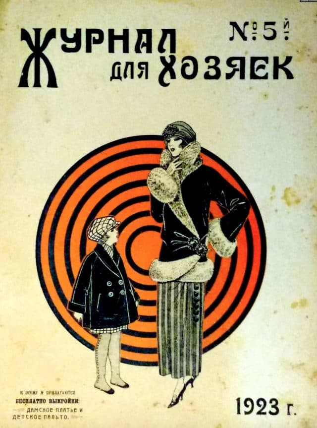
Большевики осознавали значимость СМИ в формировании общественного мнения и активно развивали женскую прессу. Основной задачей было убедить женщин в необходимости их активного участия в строительстве нового общества и развитии промышленности.
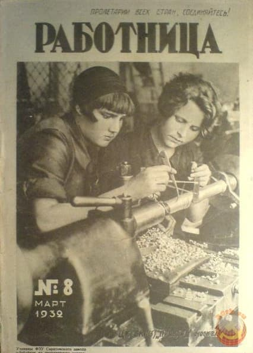
Пионером среди советских женских изданий стал журнал «Коммунистка». Его целевая аудитория — женщины-руководители. Издание носило строго официальный характер и служило инструментом донесения партийной линии до читательниц. Характерные заголовки того времени: «Усилить рост ленинской партии», «Готовить кадры безбожников», «Наладить руководство выдвиженками».
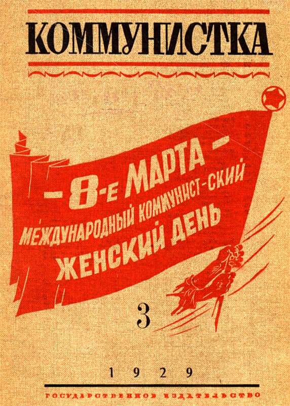
Исследователи выделяют два типа партийных изданий: руководящие и массовые. «Коммунистка» относилась к первому типу, в то время как массовые издания были более доступны для простого читателя.
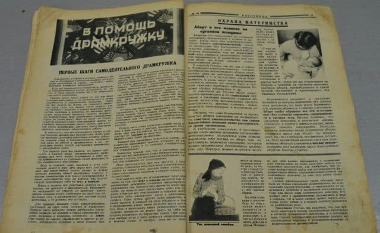
В 1922 году начал выходить журнал «Крестьянка», который просуществовал до 2015 года. Издание стремилось просвещать сельских женщин, рассказывая о новых методах ведения хозяйства, важности образования и роли в общественной жизни.
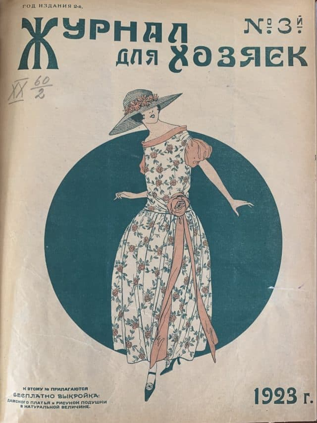
Журнал учитывал низкий уровень грамотности читательниц, используя простой язык и много иллюстраций. Иногда редакция сталкивалась с непониманием со стороны читательниц, например, приходилось объяснять, что такое карикатура.
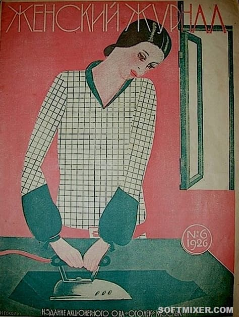
В 1923 году возобновил выход журнал «Работница», основанный ещё в 1914 году. До 1927 года он был преимущественно пропагандистским изданием. Только под давлением читательниц появились разделы о семье, кулинарии и рукоделии.
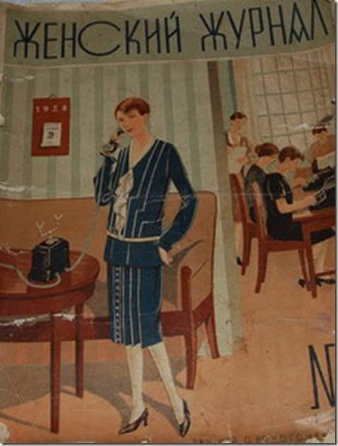
По образцу центральных журналов создавались региональные издания: «Красная сибирячка», «Труженица Северного Кавказа», «Свободная женщина» и другие. Выпускались также издания на языках народов СССР.
Период НЭПа принёс некоторое разнообразие. В 1926 году появился «Женский журнал», ориентированный на домохозяек. Он включал разделы о моде, рукоделии и домоводстве. Однако в конце 20-х годов журнал был закрыт за «внеклассовость».
К 1930 году в СССР издавалось 18 женских журналов общим тиражом более 800 тысяч экземпляров. Из-за высокой стоимости подписки часто практиковалась коллективная подписка.
С началом индустриализации женские журналы, особенно «Работница», сосредоточились на производственной пропаганде. Публиковались истории о героинях труда, которые находили счастье в работе и добивались материального благополучия.
Несмотря на стремление партии привлечь женщин к производству, на местах существовало сильное сопротивление. Журналы призывали женщин доказывать свою компетентность в традиционно мужских профессиях.
После войны женские журналы продолжали акцентировать внимание на роли женщины как труженицы. Только в послевоенное десятилетие начали постепенно возвращаться темы семьи и личного счастья, хотя производственная тематика оставалась приоритетной.
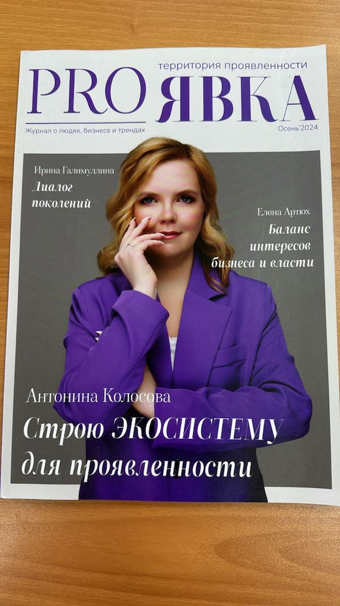
В современном мире журналы обрели совершенно новое значение. Они стали не просто источником информации, но и мощным инструментом формирования имиджа, престижа и социального статуса.
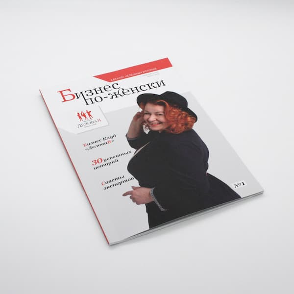
Сегодня журналы выполняют множество функций:
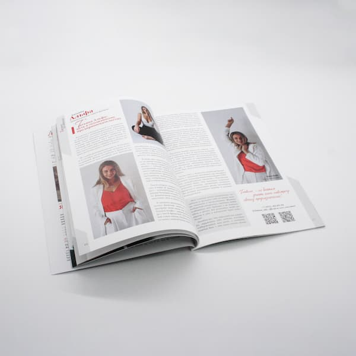
Для многих людей появление на обложке журнала остаётся значимым событием, символизирующим успех и признание. Качественная полиграфия, профессиональная съёмка и редакционная работа создают уникальный продукт, который невозможно полностью заменить цифровыми форматами.
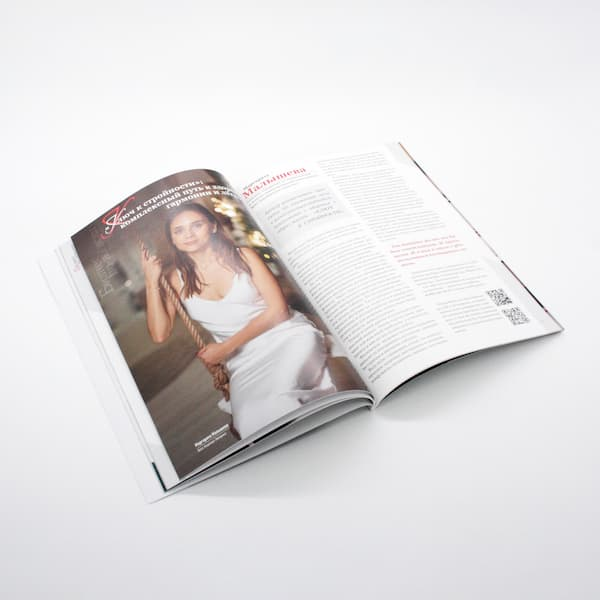
Если вы планируете создать собственный журнал, типография «Лазурь» готова предложить вам профессиональные услуги печати. Мы обеспечим:
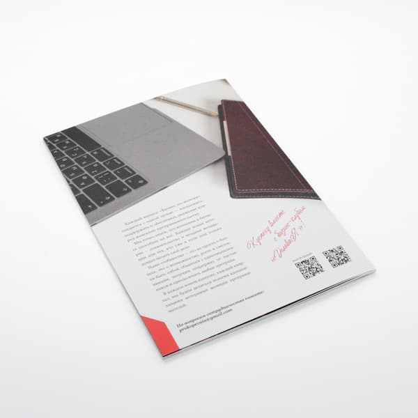
Доверьте печать вашего издания профессионалам — свяжитесь с нами для обсуждения деталей вашего проекта!